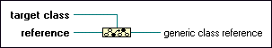

To More Generic Class Function
Owning Palette: Application Control VIs and Functions
Requires: Base Development System
Typecasts a reference, such as a control or a type definition, to a more generic class or interface in the inheritance hierarchy.
For example, if Class A inherits from Class B, the function upcasts a variable of type A to a variable of type B.
You can use the To More Generic Class function for casting any class hierarchy in LabVIEW, including VI Server refnums, .NET/ActiveX refnums, and LabVIEW classes or interfaces.

 Add to the block diagram Add to the block diagram |
 Find on the palette Find on the palette |